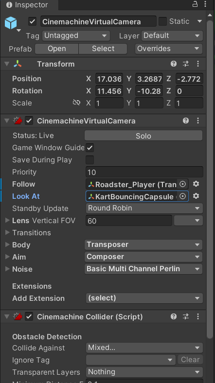
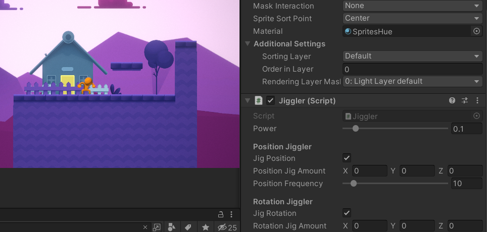

Virtual environment
I. A-Frame web framework
01 Hello world
02 Shape
In this exercise, i tried to make few shapes in the VR environment. Not just experimenting different shapes, I also explored the functions of adding its position, rotation, as well as to parent the shadow.
→Link to my VR environment for shapes
03 Texture
Beside colors, we can also apply textures on the object. By doing so, we first gathered the texture images in the folder and then add the material attribute in the code.
→Link to my VR environment for texture
04 Animations
In this exercise, we tried to bring animations to objects. The animation that we can make include rotation with all different axis, position or even size. I first tried with rotation and I found that I have to make two continuous animations if i want to make the object to hae a perfect smooth loop. In the video below, you can also see that the speed of the box will get speed up and then slow down. This is being done by manipulating the virtual environment by JavaScript.

05 Interactions
Not just with auto animation, we can also interact with objects in the virtual environment. I used 2 different ways to add interaction in this exercise. The first one is to add mouseenter/leave event; while the other one is adjusting its Javascript like the previous exercise:
06 Interaction Headset
To experience VR environment we normally need a headset. Therefore, there are actually
different ways that we can control how to interact while wearing the headset. In this
exercise, I customized the virtual cursor (mouse replacement) and also explored an
interaction called fuse. What fuse can do is to control when the animation of the object
trigger after the virtual cursor hits on it.
In the below demostration, I set the fuss timeout to 2 seconds. The right box will grow
bigger throughout time when you hover. After your cursor left, the box will then turn
into red color. When you interact with the left box, it will first turn into green color
itself and then the other box spin quickly.
II. Unity
In this workshop, we learned how to use unity to create our environments as a game. I picked Kart game and LEGO as my exercises and followed their tutorials along.
1. Kart game
During the tutorial of creating a kart game, I have learned the basic functions and tools of the editor, how to change the properties and settings (e.g. color, size) of a component and to publish the game itself.
After following the above basic tutorial, I continued with personalizing the game. First of all, i browsed more assets online to add in the game and I found a free package which more unique materials and textures can be added to the kart. I remember the time when I played mario kart game with friends, a lot of us often spend quite some time on choosing our own skin, that's why I think this is something that i shouldn't miss :) As you can see in the photo, the kart material has become shiny or even with a wild pattern!
To spice up the kart outlook a little bit, I also made my own materials to apply on the kart. I tried to create some glowing particles that will keep attaching when the kart is running.
Next, I added more decorations and speedpad to the scene.
When I was testing the game from the play scene, the camera setting didn't follow the player's kart anymore. After looking through the setting, I realized that I have to change the setting in CinemachineVirtualCamera, otherwise it will only follow the original kart in default setting.
Below is the video for the game. I have to say that I'm very terrible with kart game and therefore in the video i couldn't get through all the checkpoints myself ;D But all the tutorials and setting i went through works :)
2. Platformer game
The second game I chose to learn is the Platformer. I went through its tutorial and the first three chapters with learning the basics, changing colors of player and adding enemy are the same approach from the previous game.
The tutorial for this game is actually easy to follow. Therefore, I moved on to the customization and explored what i can do from mods. First of all, I changed the visual style of the game to become more vibrant. I also added a rainbow trail to the player character, meaning there will be a rainbow following the player when he/she move. Beside adding more decoration and speed/bounce pad, I also learned that I can create animation on an object by adding a component.
Final version of the game: